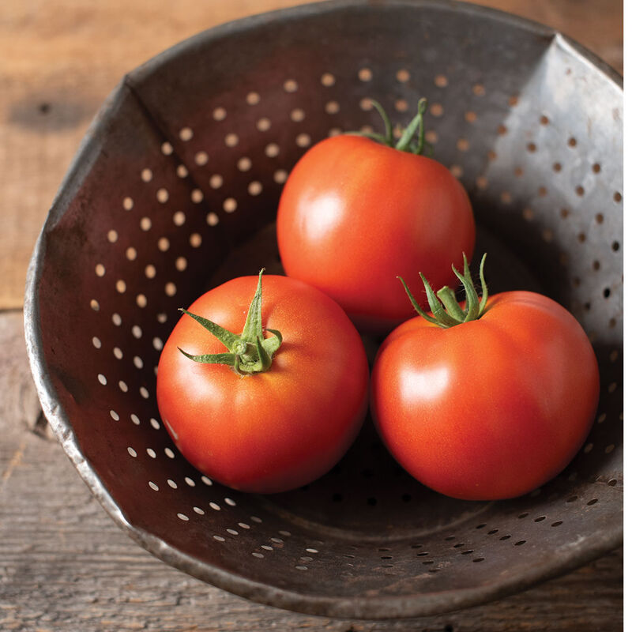
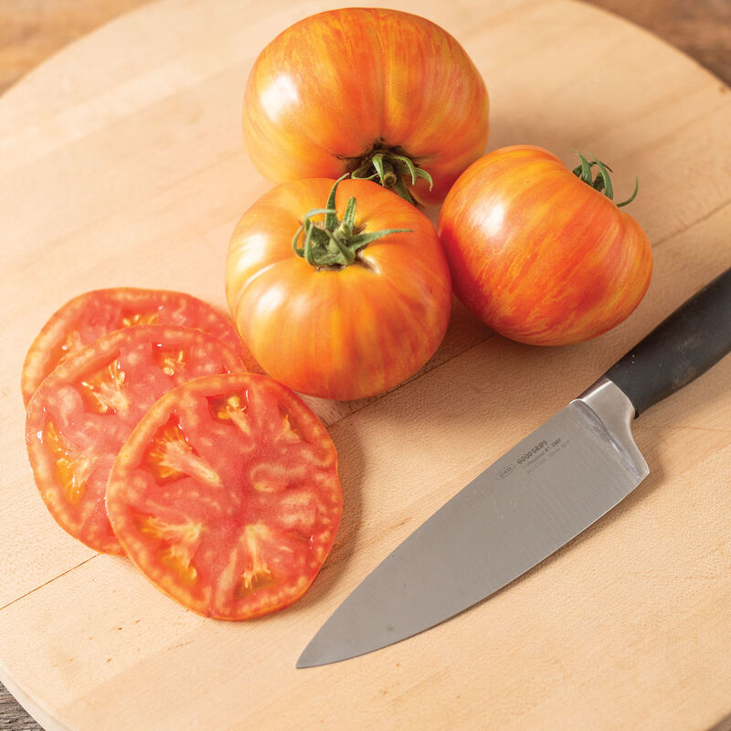
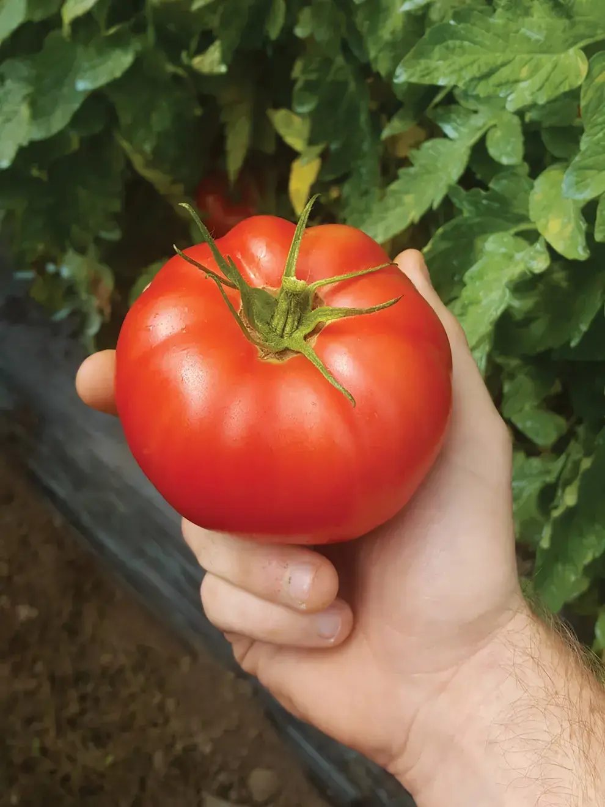

Episode 10 of 15 · July 8, 2025
Major yield gap between varieties
Many growers have trouble with fruit setting. Because their varieties do not fit their climate.
This week's conversation with Ghost House Farm turned out to be about varieties. Many growers have trouble with fruit setting. And it looks like some varieties just don't fit their climate.
A quick chat with two of our friends growing in hot Virginia and North Carolina goes in the same direction. Some cultivars set fruit and ripen them continuously while having a good stem size. Some others have skinny stems and abort fruit. In the same greenhouse!
Before we address the list of winners and losers, here is a small praise for Geronimo. From our research and experience, this variety tolerates greenhouse heat very well. It sets fruit all season long and produces big-quality fruit. All of this while maintaining a good stem size.
Here is what Ghost House Farm has noticed this year:
Hot Streak: by far have ripened the most fruits and set more fruits continually.
RuBee Dawn: despite being late, they now ripen a lot of fruit and are setting fruit pretty well.
Damsel: ripened prematurely and did not set fruit well after that. They probably are going to have very low yields for the rest of the summer.

RuBee Dawn

Hot Streak

Damsel
Varieties play a huge role in total yield potential. By looking at their harvest data, Hot Streaks have produced 20% more than Damsel, so far!
I’m looking forward to seeing the difference in total yield at the end of the season.
We would like to hear about you all, guys. What is your absolute tunnel top performer and which one will you never grow again?
P.S: Our friend in South Carolina confirmed that RuBee Dawn is a good heat resistant variety.
The other good performers in his very hot climate are:
- Cuba Libre
- Geronimo (of course)
- Caiman